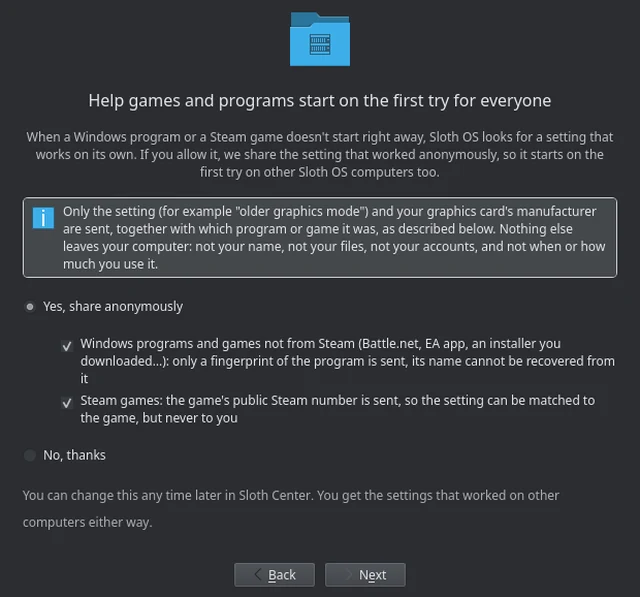

Sharing starts only with your permission. The Welcome wizard asks whether you want to share, with a separate tick for Windows programs and for Steam games. You can change either one later in Sloth Center → Windows programs or Games.
Your choice
Sharing is opt-in, and it has two parts you choose separately:
- Windows programs and games not from Steam (Battle.net, EA app, an installer you downloaded…): only a fingerprint of the program is sent, and its name cannot be recovered from it.
- Steam games: the game's public Steam number is sent (see Steam games).
If you say no, nothing is sent. You still download and use the shared settings produced from other machines. Turning a part off deletes its reports still waiting to be sent. If you said yes before November 2026, when only Windows programs were shared, Steam games stay off until you turn them on.

What a report contains
When sharing is on, reports are queued locally and sent in the background. According to the repository's knowledge-service documentation, a report contains:
- A random machine identifier, stored by the service as a salted hash.
- A SHA-256 hash of the program's normalized product name and executable filename, computed on your machine. The service does not receive the program name.
- Your GPU manufacturer category: AMD, NVIDIA, Intel or other.
- The compatibility setting used and whether it worked.
The project says reports do not include a user name, files, the raw program name, or usage times. IP addresses are used only for rate limiting as a salted hash with a daily-changing salt; rows older than one day are deleted.
Steam games
When a Steam game closes right after it starts, Sloth Center can try fixes for it, starting with the setting that worked for that game on other computers. If you allowed it for Steam games, Sloth OS reports whether a fix it tried made the game start. The report is the same as above, with one difference: instead of a fingerprint of a name, it carries a SHA-256 hash of the game's Steam number. Steam numbers are public, so the service can tell which game a setting is for. It still cannot tell who sent it: nothing about you or your Steam account is in the report. That is why Steam games have their own yes, off until you choose it.
How reports are protected
The service accepts only allowlisted settings. It rejects arbitrary commands, environment variables, values and arguments. A setting is published only after it has worked on at least three different machines and at least 75% of reports for that setting are successful. Each machine gets one vote per program, GPU and setting.
These safeguards are described in the public knowledge repository. They describe the current design and may change as the service develops.
Downloading shared knowledge
Sloth OS downloads a static knowledge file from a public GitHub repository. The file is the same for every machine, so downloading it does not tell the service anything about your computer.
Change your choice
Open Sloth Center → Windows programs or Games to change sharing at any time: both pages show the same two switches. Shared settings remain available whether you choose yes or no. The feature is still under active development; review this page again when the project publishes a release.
This website
This website uses no cookies and no tracking or analytics service. It shows two numbers:
- Downloads: from SourceForge's public download statistics for Sloth OS. The Sloth OS knowledge service asks SourceForge (at most every 10 minutes), so your browser never contacts SourceForge from this website. Nothing about you is involved.
- Visitors: the Sloth OS knowledge service counts each visitor once a day. To do that, your address is turned into a salted hash with a salt that changes every day, kept only until the next day, and never stored with anything else. No page, browser or device information is kept. Your browser remembers only the day it was counted, so it is not counted again that day.
The game search on the home page (“Will my game run?”) downloads the same public game list Sloth OS uses, straight from the Sloth OS knowledge repository on GitHub (raw.githubusercontent.com), the same company that hosts this website. What you type stays in your browser: the search runs on your computer, nothing is sent.
Your browser also remembers whether you closed the DistroWatch card at the bottom of the page, so it does not come back right away. All of this stays in your browser (local storage), and clearing the site's data removes it.